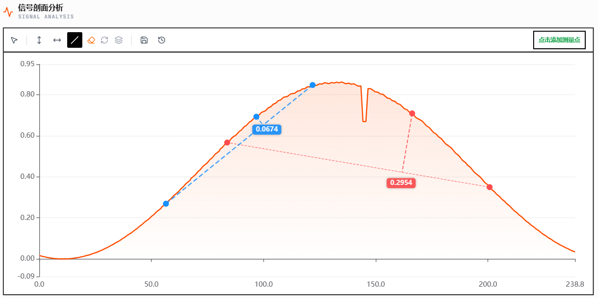
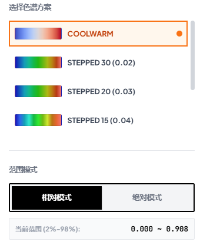

测量自动化 / Automation
测量预设系统 (Measurement Presets)
支持将 2D 选区、测量模式及物理基准保存为“快照”。面对不同产品检测需求时，一键即可恢复完整分析环境。
1. 捕捉配置
2. 保存预设
3. 自动应用
多基准线 P2L 管理
系统现支持在同一剖面图中建立多组独立的测量逻辑。每组拥有自定义基准线、专属颜色及计算结果，实现复杂台阶的高精度并行对比。
- ● 独立颜色方案
- ● 实时垂直间距计算
- ● 自动基准线吸附

图：多基准线 P2L 测量实测界面 (v3.3)
2%/98% 色谱精算
采用百分位剔除算法自动过滤 2% 的背景极值干扰。新增色谱方案预设，支持针对不同材质（如金属、陶瓷）一键切换最佳对比度配色方案。
当前优化算法
基于分位数映射，确保 96% 的核心数据获得完整的动态范围，避免极值导致全图发灰。

图：2%/98% 相对模式与色谱预设界面 (v3.3)
衍生形貌模式 / Vision Maps
高级形貌分析引擎 (Gradient & Curvature)
高度图 (Height)
梯度图 (Gradient)
曲率图 (Curvature)
视觉美学与交互 / UI Upgrade
3.3
Designer-Grade 界面重构
引入磨砂玻璃材质与 Plus Jakarta Sans 字体。全局动画逻辑升级，包括流光加载、打字机提示等。
T 键极速拾取
鼠标悬浮点击 'T' 键即可瞬间完成点位捕捉分析。
两点式点击划线
优化划线交互，采用“点击-点击”逻辑，提供像素级精度。